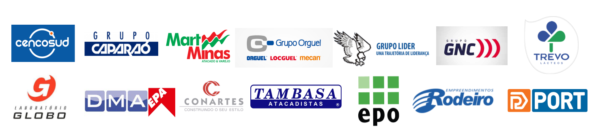

MED EMPRESARIAL
MEDICINA E SEGURANÇA DO TRABALHO
Um novo conceito em Gestão Ocupacional

Certificada na ISO 9001:2015 em 2017, a MED EMPRESARIAL oferece um novo conceito de atendimento em Medicina, Engenharia e Segurança do Trabalho, um atendimento de qualidade e integrador, visando o bem estar de colaboradores por intermédio de programas de gestão e qualidade de vida nas empresas.
Com uma política eficiente no desenvolvimento dos trabalhos realizados por seus colaboradores, nossa trajetória vem sendo marcada pelo constante progresso tecnológico através de investimentos em modernização, construindo assim, uma imagem de excelência e qualidade na prestação de serviços.
Fundada em Belo Horizonte / Minas Gerais no ano de 1992. Credibilidade e experiência são os principais patrimônios acumulados pela MED EMPRESARIAL ao longo destes anos de atividades no mercado local e nacional. Acompanhando e se aperfeiçoando a evolução dos serviços prestados.
A Empresa é referencia em Medicina, Higiene e Segurança do Trabalho em Belo Horizonte e região metropolitana. No decorrer desses 26 anos de existência, a MED EMPRESARIAL viu a atividade ser regulamentada e ganhar seu espaço com credibilidade junto às empresas.
A MED EMPRESARIAL, é uma empresa especializada em Medicina e Segurança do Trabalho, focada em atender seus clientes com agilidade e eficiência. Nosso objetivo é prestar o melhor serviço em nosso segmento, inovando e otimizando os procedimentos internos e externos.
Dotada de uma estrutura completa para realização e desenvolvimento dos programas de Saúde Ocupacional, contamos com uma equipe qualificada e bem estruturada para oferecer um atendimento diferenciado de acordo com a necessidade de cada cliente.
Realizando um trabalho padronizado de extrema qualidade, a MED possui um software de Gestão Ocupacional e Segurança do Trabalho, que fica disponível para seus clientes através de acesso via internet com senhas personalizadas permitindo a integração entre os departamentos de sua empresa, sem limites de acessos e licenças.
Confira alguns dos clientes conquistados pela experiência e bom atendimento da MED.
